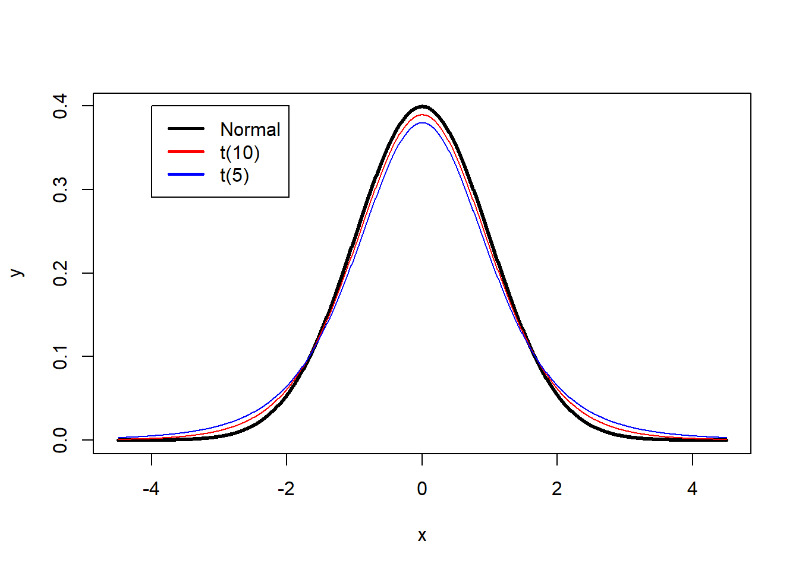

What is a p-value (mathematically)
Figure 1: Scientists have a tendency to worship p-values below a value of 0.05.
When testing predictions in empirical research, researchers often report whether their results are statistically different from 0. For example, a researcher might be interested in whether the use of a cell-phone increases the likelihood of getting into a car accident compared to not using a cell phone. A researcher might ask one group of individuals to use cell phones while driving in a driving simulator, while a control group does not use cell phones. The researcher might predict cell phone users get into more accidents, and test this prediction by comparing whether the difference between the two groups in the experiment is statistically different from zero. This is typically referred to as null-hypothesis significance testing (NHST). The ‘significance’ part of this name is a misnomer: what we understand as the ‘significance’ of a finding in normal English depends on its theoretical or practical importance and has very little to do with statistics. Instead, we will therefore refer to such tests as ‘null-hypothesis testing’, and use ‘statistical difference’ for what is sometimes referred to in the literature as a ‘significant finding’ or a ‘statistically significant finding’.
Assume we ask two groups of 10 people how much they liked the extended directors cut version of the Lord of the Rings (LOTR) trilogy. The first group consists of my friends, and the second groups consists of friends of my wife. Our friends rate the trilogy on a score from 1 to 10. We can calculate the average rating by my friends, which is 8.7, and the average rating by my wife’s friends, which is 7.7. The difference is 1.
| friends | myfriends | mywifesfriends |
|---|---|---|
| friend_1 | 9 | 9 |
| friend_2 | 7 | 6 |
| friend_3 | 8 | 7 |
| friend_4 | 9 | 8 |
| friend_5 | 8 | 7 |
| friend_6 | 9 | 9 |
| friend_7 | 9 | 8 |
| friend_8 | 10 | 8 |
| friend_9 | 9 | 8 |
| friend_10 | 9 | 7 |
To get these data in a dataframe in R, we use the code:
friends <- c("friend_1","friend_2","friend_3","friend_4","friend_5","friend_6","friend_7","friend_8","friend_9","friend_10")
friends_daniel = c(9,7,8,9,8,9,9,10,9,9)
friends_kyra = c(9,6,7,8,7,9,8,8,8,7)
df <- data.frame(friends,friends_daniel,friends_kyra)Let’s first look at the data by plotting it.
# Get data frame in long format for plotting
df_long <- gather(df, daniel_kyra, rating, friends_daniel:friends_kyra, factor_key=TRUE)
# Plot the data
ggplot(df_long, aes(x=rating, fill=daniel_kyra)) + geom_density(alpha=.3) + theme_bw()
We can also summarise the data and look at the means, sd, and sample size per group:
summarise(group_by(df_long, daniel_kyra),
mean = mean(rating), sd = sd(rating), n = n(),
.groups = 'drop')## # A tibble: 2 x 4
## daniel_kyra mean sd n
## <fct> <dbl> <dbl> <int>
## 1 friends_daniel 8.7 0.823 10
## 2 friends_kyra 7.7 0.949 10We can see the groups overlap to a certain extent, but the mean ratings differ by 1 whole point, so there is also some non-overlap. The question we are no faced with is the following: Is the difference between the two groups just random variation, or can we conclude my friends really like the extended directors cut of the Lord of the Rings (LOTR) trilogy more than my wife’s friends?
In null-hypothesis testing we try to answer this question by calculating the probability of observing a specific, or more extreme, outcome of a test (i.e., a difference in movie ratings of 1 point or more) assuming that the null hypothesis is true (i.e., there is no real difference between how much my friends and my wife’s friends like the extended directors cut of LOTR). This probability is called the p-value.
The null-hypothesis assumes that if we would ask an infinite number of my friends and an infinite number of my wife’s friends how much they like LOTR, the difference between these huge groups is exactly 0. However, in a small sample of my friends and my wife’s friends (say 10 friends in each group), random variation is very likely to lead to a difference larger or smaller than 0. How do we know whether an observed difference is due to random variation around a difference of 0, or whether an observed difference is due to random variation around a real difference between our friends?
To answer this question we need to know is what constitutes a reasonable expectation about how much the differences between groups can vary, if we would repeatedly ask samples of groups of friends to rate LOTR. When we compare two groups, we use the means, standard deviations, and number of observations in each group to calculate the t-statistic.
With the means (M), standard deviations (SD) and sample size (N) for each of the two groups from the Table above we can examine the probability that the difference between the two groups is larger than 0, given the data we have available. This is done by calculating the t-statistic, which is related to a probability (a p-value) of getting the observed or a more extreme t-statistic in the t-distribution. The t-distribution describes samples drawn from a population. It is similar to the normal distribution (which describes the entire population). Because the t-distribution describes the probability density function for a specific sample, the shape depends on the sample size. The larger the sample, the more similar the t-distribution becomes to the normal distribution. Below, you can see the normal distribution (with M = 0 and SD = 1) in black, and the t-distribution for 10 and 5 degrees of freedom. We can see the t-distribution has somewhat thicker tails than the normal distribution.

For a video lecture on this topic, see: